Щоденна робота Менеджера: наповнення каталогу, обробка замовлень, читацькі виклики, облікові записи покупців, заклади-одержувачі, журнал подарованих книг і аналітика.
Для когоМенеджер магазинуВерсія1.0, листопад 2026Відповідно доТЗ, розділ 5; SRS, вимога U8
1Початок роботи
Менеджер наповнює каталог і обробляє все, що відбувається в магазині. Покупці не бачать інструментів Менеджера, а Менеджер не купує книги: кошика й особистого кабінету в нього немає.
Вхід
Натисніть Увійти і введіть email та пароль Менеджера. Перший обліковий запис Менеджера створює ІТ-фахівець під час розгортання.
Після входу відкривається Панель менеджера.
Безпека
Не передавайте пароль іншим людям і не залишайте відкритий сеанс на спільному комп’ютері: натискайте Вийти.
Сеанс завершується після 30 хвилин бездіяльності. Незбережені дані форм при цьому втрачаються.
Після 5 невдалих спроб вхід призупиняється на 15 хвилин.
Панель менеджера
У верхньому меню Менеджера є Каталог, Панель менеджера, Довідка і Вийти. Ліворуч у панелі — шість розділів:
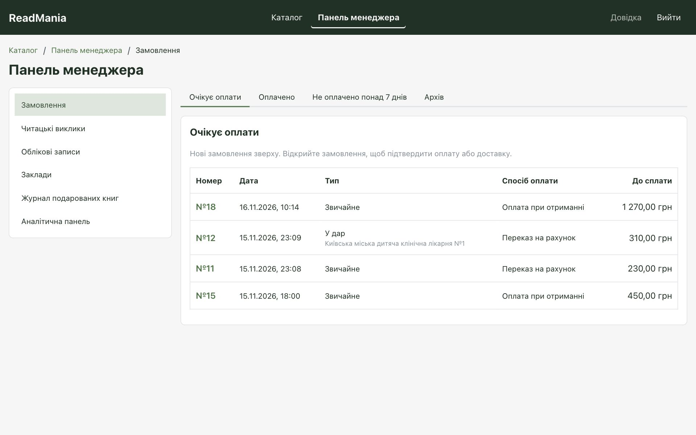
Мал. 1. Панель менеджера, розділ «Замовлення»
Розділ
Для чого
Замовлення
Підтвердження оплати й доставки, скасування, архів (розділ 3).
Читацькі виклики
Створення й завершення викликів для покупців (розділ 4).
Затребуваність, залишки й рейтинг видань (розділ 8).
Каталог Менеджер веде прямо на сторінці Каталог: там з’являються кнопки керування (розділ 2).
Про кожне нове замовлення команда менеджерів отримує лист на спільну адресу менеджерів.
2Каталог
Відкрийте Каталог. Для Менеджера над переліком є кнопки Імпорт із CSV, Керувати жанрами і Додати видання. Пошук і фільтри працюють так само, як у покупців.
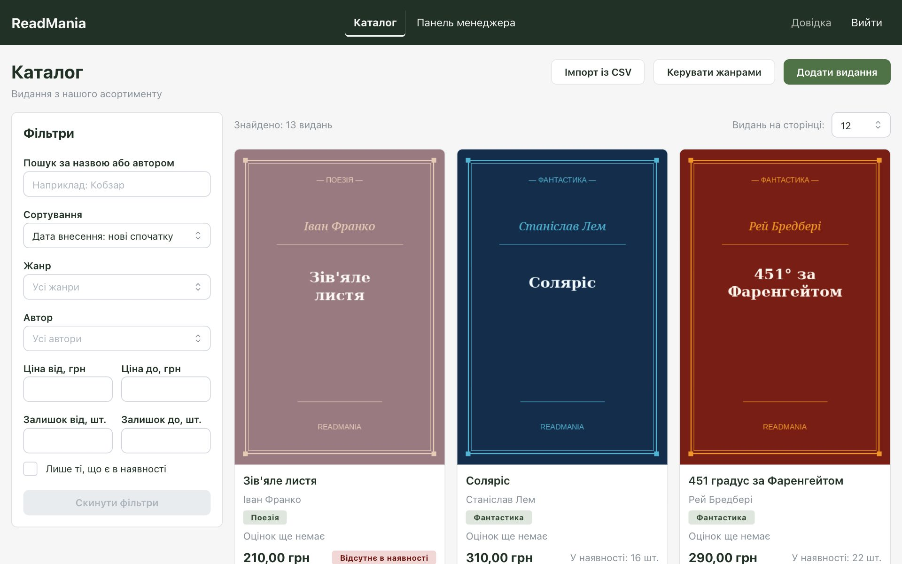
Мал. 2. Каталог із кнопками Менеджера
Додавання видання
Натисніть Додати видання.
У блоці Основні дані вкажіть назву, авторів, жанр, видавництво, рік видання, ISBN і опис.
Автора оберіть зі списку або введіть ім’я й натисніть Enter. Якщо такого автора ще немає, його буде створено.
Жанр так само: оберіть наявний або введіть назву нового.
У блоці Ціна й залишок вкажіть ціну в гривнях і кількість примірників на складі.
У блоці Обкладинка оберіть файл JPEG або PNG. Для нового видання обкладинка обов’язкова.
Натисніть Зберегти видання. Видання одразу з’явиться в каталозі.
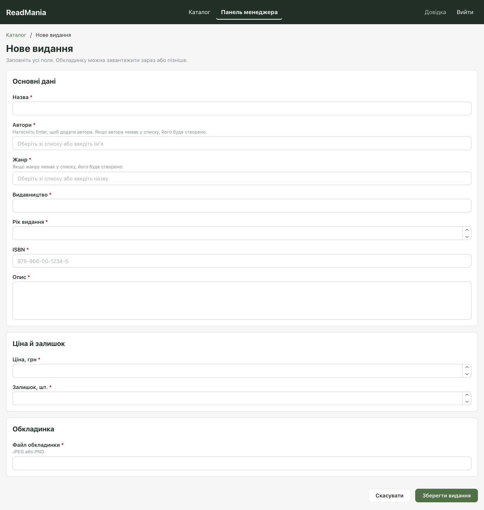
Мал. 3. Форма нового видання
Підказки в полях
Якщо поле заповнено неправильно, під ним з’являється пояснення з прикладом, наприклад: «ISBN: видання з таким ISBN уже є в каталозі». ISBN має бути унікальним.
Редагування й видалення
Відкрийте сторінку видання в каталозі. Менеджер бачить на ній кнопки Редагувати видання і Видалити видання.
Редагування відкриває ту саму форму з поточними даними. Щоб замінити обкладинку, оберіть новий файл. Найчастіше тут змінюють ціну й залишок після надходження товару.
Видалення можливе лише тоді, коли залишок дорівнює 0 і видання немає в активних замовленнях. Інакше кнопка неактивна, а підказка пояснює причину. Видалення не можна скасувати.
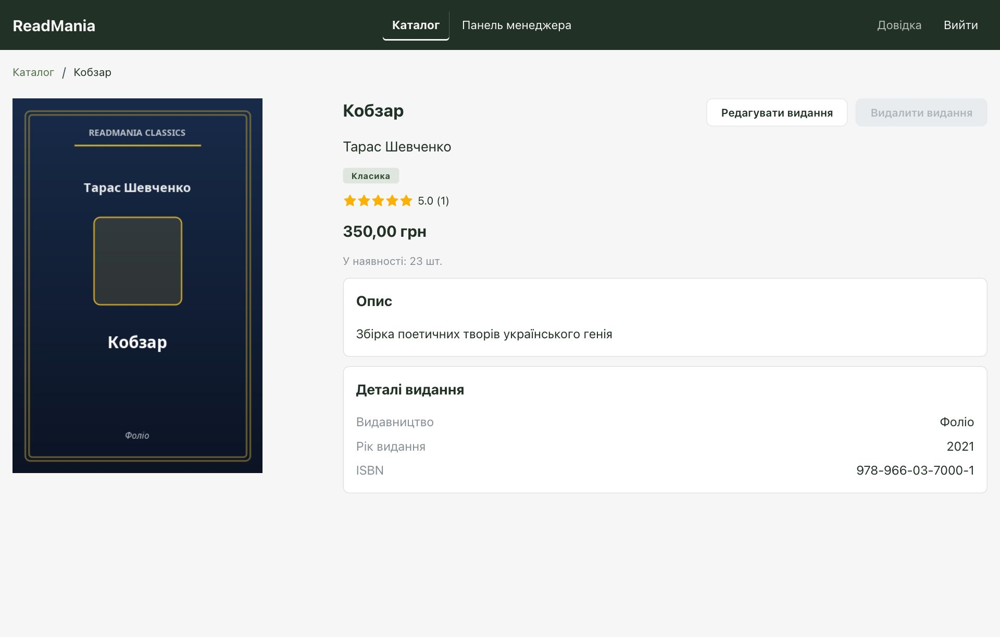
Мал. 4. Сторінка видання з кнопками Менеджера
Імпорт із CSV
Щоб додати багато видань одразу, підготуйте таблицю (наприклад, в Excel або Google Таблицях) і збережіть її у форматі CSV.
Колонка
Що вказати
Приклад
Назва
назва видання
Кобзар
Автори
одне чи кілька імен через кому
Тарас Шевченко
Видавництво
назва видавництва
Фоліо
Рік видання
чотири цифри
2021
Жанр
назва жанру; новий жанр буде створено
Поезія
Опис
коротка анотація
Збірка поезій
Ціна
ціна в гривнях
350
Кількість
залишок на складі
10
Обкладинка
посилання http(s) на JPG, PNG або WebP
https://…/kobzar.jpg
ISBN
унікальний номер
978-966-03-7001-3
Натисніть Імпорт із CSV і оберіть файл .csv.
Натисніть Імпортувати.
Перегляньте Результат імпорту: скільки рядків додано й відхилено. Для кожного відхиленого рядка показано номер, ISBN, назву й причину.
Виправте відхилені рядки у файлі й імпортуйте лише їх повторно.
Важливо
Перший рядок файлу — назви колонок. Роздільник (кома, крапка з комою чи табуляція) визначається автоматично. Рядок із будь-якою порожньою колонкою або з ISBN, що вже є в каталозі, буде відхилено, а решта рядків усе одно додадуться.
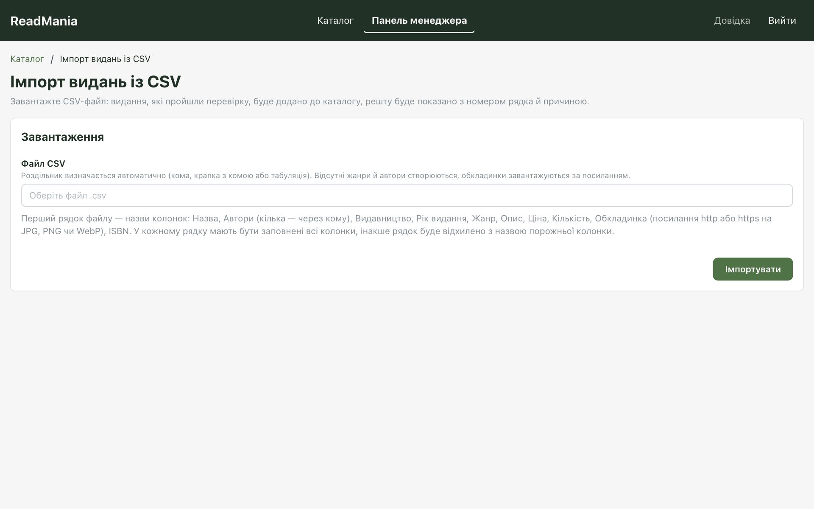
Мал. 5. Імпорт видань із CSV
Жанри
Кнопка Керувати жанрами відкриває перелік жанрів із кількістю видань у кожному.
Додати жанр — створити новий жанр (назва до 100 символів, без повторів).
Кнопка з олівцем — перейменувати жанр; назва зміниться в усіх виданнях.
Кнопка з кошиком — видалити жанр. Це можливо лише для жанру, до якого не прив’язано жодного видання.
3Замовлення
Переліки
Розділ Замовлення має чотири переліки:
Перелік
Що в ньому
Що зробити
Очікує оплати
Нові замовлення, нові зверху.
Підтвердити оплату переказом або доставку замовлення з оплатою при отриманні.
Відкрийте замовлення: ліворуч — склад, вартість, доставка й оплата; праворуч — блок Зміна статусу та історія статусів.
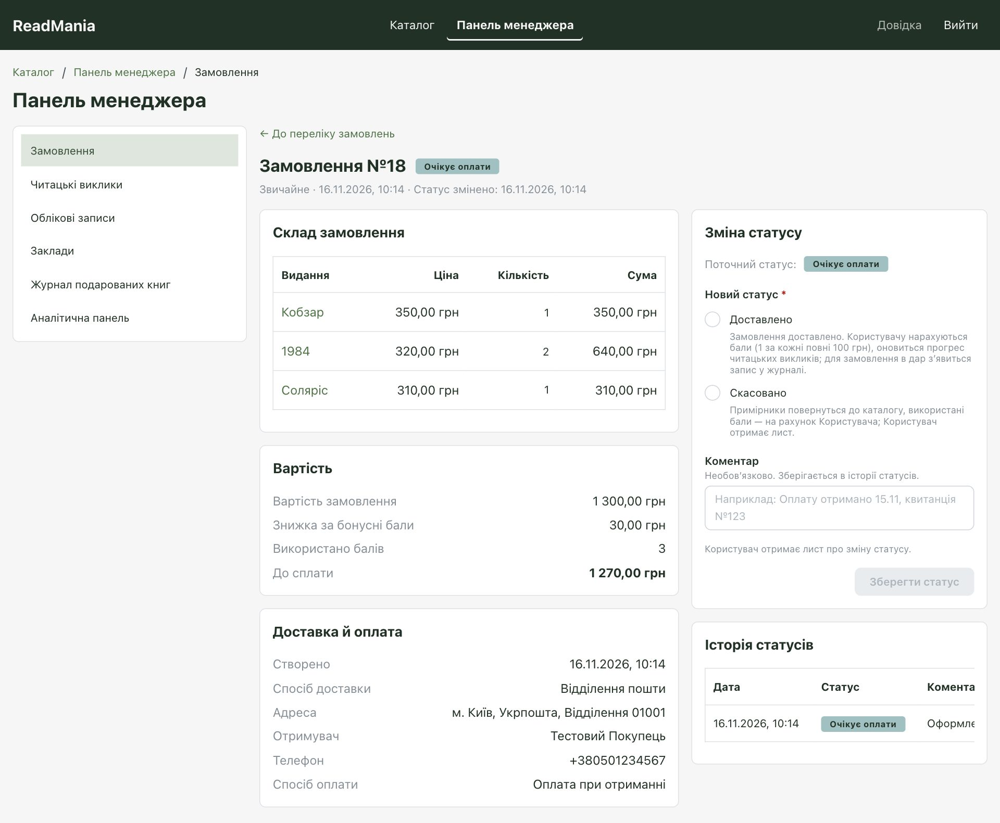
Мал. 6. Картка замовлення з блоком зміни статусу
У блоці Новий статус оберіть статус. Під кожним варіантом написано, що станеться після зміни.
За потреби додайте Коментар, наприклад Оплату отримано 15.11, квитанція №123. Він збережеться в історії.
Натисніть Зберегти статус і підтвердьте. Покупець отримає лист про зміну статусу.
Дозволені переходи
Поточний статус
Оплата
Можна змінити на
Очікує оплати
переказ
Оплачено або Скасовано
Очікує оплати
при отриманні
Доставлено або Скасовано
Оплачено
переказ
Доставлено або Скасовано
Доставлено, Скасовано
—
фінальні статуси, змінити неможливо
Після «Доставлено»
покупцю нараховується 1 бал за кожні повні 100 грн;
оновлюється прогрес читацьких викликів;
для замовлення в дар з’являється запис у журналі подарованих книг.
Після «Скасовано»
примірники повертаються на склад;
списані бонусні бали повертаються покупцю;
покупець отримує лист.
Перевіряйте перед збереженням
Повернути попередній статус неможливо. Якщо поки ви працювали статус уже змінив інший Менеджер або покупець скасував замовлення, система не збереже вашу зміну й покаже актуальний стан.
Неоплачені замовлення
Відкрийте перелік Не оплачено понад 7 днів.
Позначте потрібні замовлення прапорцями або всі одразу прапорцем у заголовку таблиці.
Натисніть Скасувати позначені і підтвердьте. Примірники й бали повернуться, покупці отримають листи.
Архів
Щоб база не розросталася, старі завершені замовлення можна видалити. У переліку Архів позначте замовлення й натисніть Видалити позначені. Записи журналу подарованих книг і оцінки покупців збережуться. Видалення остаточне.
4Читацькі виклики
Читацький виклик — завдання для покупців із нагородою в бонусних балах, наприклад «Придбати 3 видання жанру «Класика» до 31.12». Покупці беруть участь в усіх активних викликах автоматично, а прогрес рахується за доставленими замовленнями. Нагорода нараховується кожному покупцю одразу, щойно він виконає умову.
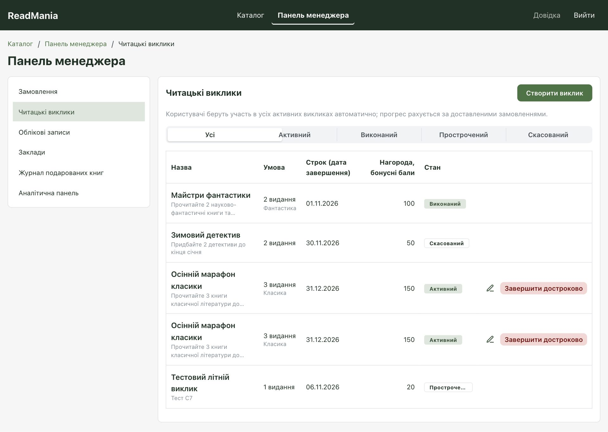
Мал. 7. Перелік читацьких викликів
Створення виклику
Натисніть Створити виклик.
Вкажіть назву й опис.
Задайте умову: Кількість видань і, за бажанням, Жанр. Без жанру зараховуються видання будь-якого жанру.
Оберіть Строк: виклик діє до кінця обраного дня.
Вкажіть Нагороду в бонусних балах і збережіть.
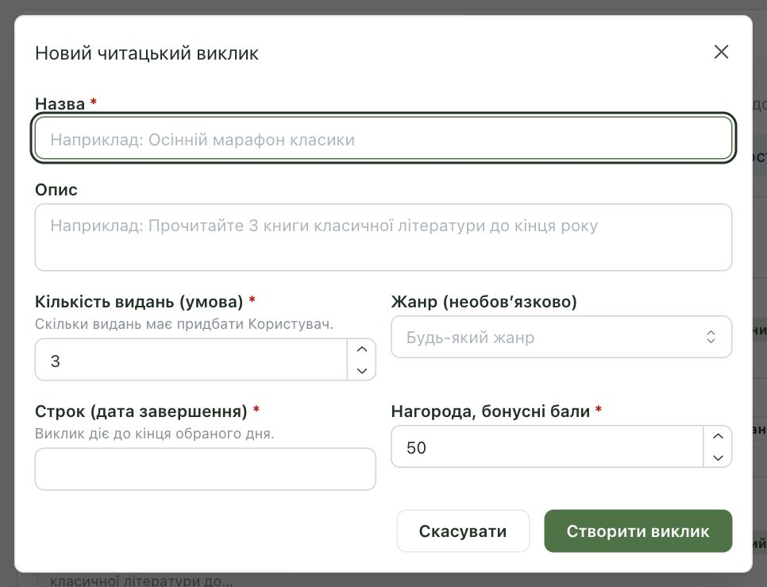
Мал. 8. Новий читацький виклик
Стани й дії
Стан
Значення
Активний
Виклик триває; його можна редагувати або завершити достроково.
Виконаний
Виклик завершено.
Прострочений
Строк виклику минув.
Скасований
Завершений Менеджером достроково.
Редагування доступне лише для активного виклику. Після зміни умови прогрес покупців буде перераховано; уже нараховані бали залишаться.
Перелік можна відфільтрувати за станом у полі Стан.
5Облікові записи
Розділ має три вкладки: Пошук, Запити на розблокування і Неактивні.
Пошук і картка
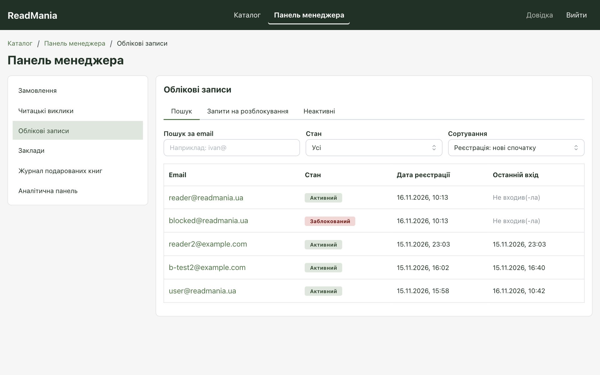
Мал. 9. Пошук облікових записів
Введіть частину email, за потреби відфільтруйте за станом (активний чи заблокований) і оберіть сортування за датою реєстрації або останнього входу. Натисніть на email, щоб відкрити картку: дані запису, кількість замовлень, баланс бонусних балів і перелік замовлень покупця.
Блокування
У картці облікового запису натисніть Заблокувати.
Вкажіть Причина блокування (до 500 символів), наприклад Тричі не оплатив оформлені замовлення. Її побачить покупець.
Підтвердьте блокування.
Покупець утратить доступ одразу, навіть у відкритому сеансі, і отримає лист із причиною. Оформлені замовлення не скасовуються, кошик, бали й оцінки зберігаються.
Розблокування
Заблокований покупець може надіслати запит з обґрунтуванням. Такі запити з’являються на вкладці Запити на розблокування.
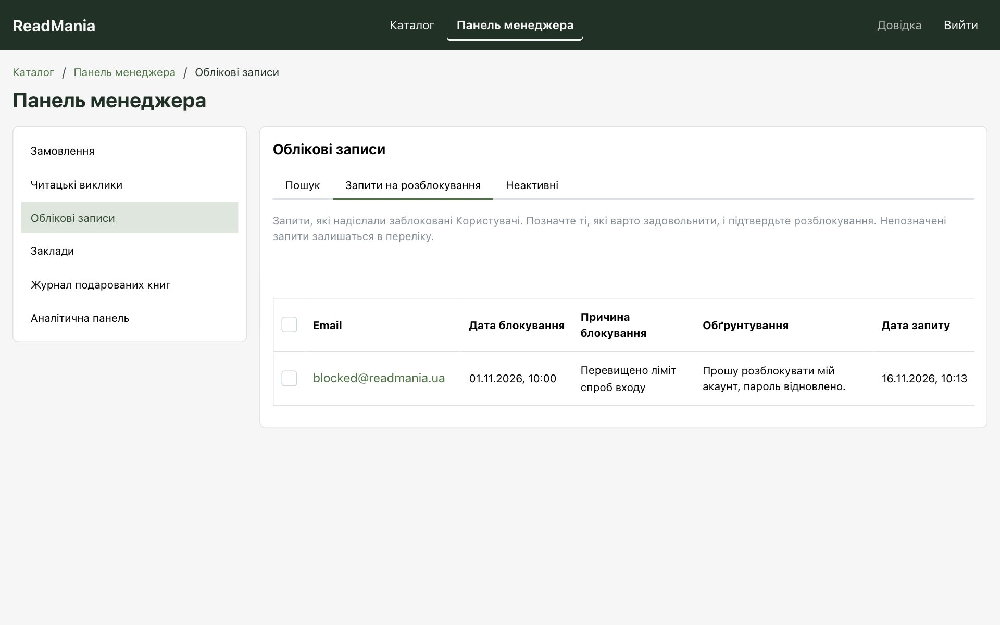
Мал. 10. Запити на розблокування
Прочитайте причину блокування й обґрунтування покупця.
Позначте запити, які варто задовольнити.
Натисніть Розблокувати позначені і підтвердьте. Покупці отримають лист і знову зможуть увійти. Непозначені запити залишаться в переліку.
Неактивні записи
На вкладці Неактивні зібрано:
активні записи без входу понад 2 роки (якщо входу не було жодного — від дати реєстрації);
заблоковані записи, які не розблоковано понад 2 роки від дати блокування.
Позначте записи й натисніть Видалити позначені. Видаляються email, пароль, кошик і бали, а в замовленнях — контакти отримувача. Склад, суми, дати й статуси замовлень та оцінки залишаються для обліку й аналітики.
Видалення остаточне
Відновити видалений обліковий запис неможливо.
6Заклади-одержувачі
Тут ведеться перелік закладів, яким покупці можуть дарувати книги: дитячих будинків, шкіл-інтернатів і бібліотек. Лише заклади з цього переліку доступні під час оформлення замовлення в дар.
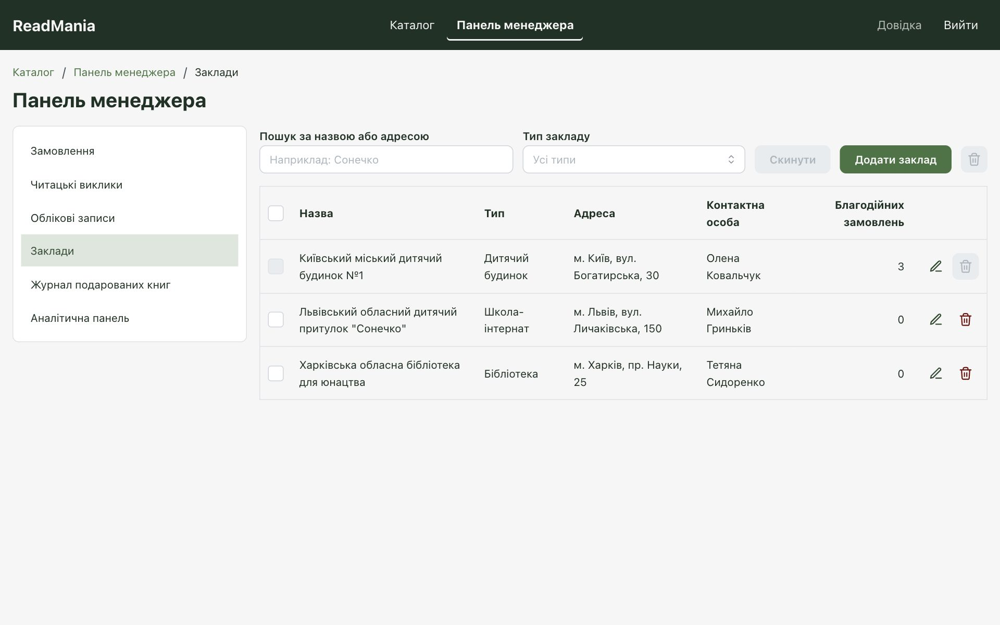
Мал. 11. Заклади-одержувачі
Пошук і фільтр. Шукайте за назвою або адресою, фільтруйте за типом закладу.
Додавання.Додати заклад → назва, тип, адреса, контактна особа → зберегти. Назва має бути унікальною.
Редагування. Кнопка з олівцем у рядку закладу.
Видалення. Кнопка з кошиком у рядку або групою через прапорці й Видалити обрані заклади. Заклад видаляється разом із його завершеними замовленнями. Заклад, що має замовлення в статусах «Очікує оплати» чи «Оплачено», видалити не можна: дочекайтеся їх завершення.
Колонка Благодійних замовлень показує, скільки замовлень у дар отримав заклад.
7Журнал подарованих книг
Кожного разу, коли замовлення в дар отримує статус «Доставлено», у журнал автоматично потрапляють записи: дата доставки, заклад, видання, кількість і номер замовлення.
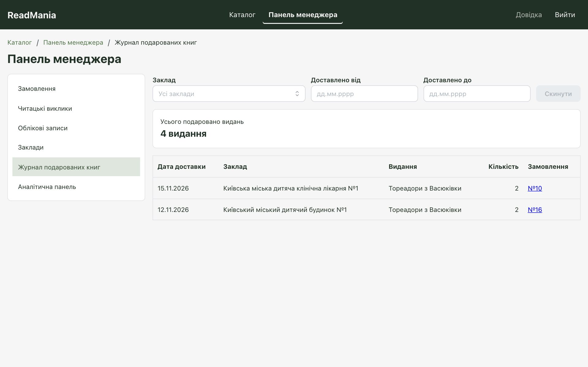
Мал. 12. Журнал подарованих книг
Відфільтруйте журнал за закладом і періодом Доставлено від / Доставлено до. Дати з майбутнього обрати не можна.
Над таблицею показано Усього подаровано видань за обраними умовами. Це зручно для звітів перед закладами.
Номер замовлення в таблиці — посилання на його картку.
Скинути прибирає всі умови.
8Аналітична панель
Панель допомагає вирішити, що дозамовити, що прибрати з каталогу і що рекламувати. Вона має три вкладки, кожна з діаграмами За жанрами і За виданнями (перші 10 позицій) та короткими висновками під ними.
Скільки примірників замовлено за період (без скасованих замовлень).
найзатребуваніші й найменш затребувані жанри та видання, видання без жодного замовлення.
Залишки
Поточна кількість на складі; період не впливає.
що закінчилося і що закінчується (менше 5 примірників).
Рейтинг
Середня оцінка й кількість оцінок за період.
найвища оцінка й низькі оцінки (нижче 3,5).
Період задається полями Період від і Період до; за замовчуванням — останні 3 місяці. Адресу сторінки з обраною вкладкою й періодом можна зберегти в закладках.
9Часті запитання
Помилково змінила статус замовлення. Як повернути?
Повернути попередній статус неможливо. Якщо замовлення ще не фінальне, оберіть правильний наступний статус і поясніть ситуацію в коментарі. Для фінального статусу зверніться до ІТ-фахівця.
Чому кнопка «Видалити видання» неактивна?
У видання є залишок на складі або воно входить до активного замовлення. Спершу встановіть залишок 0 і дочекайтеся завершення замовлень.
Імпорт відхилив частину рядків.
Подивіться причину біля кожного рядка (порожня колонка, повторний ISBN, неправильне посилання на обкладинку), виправте ці рядки й імпортуйте їх окремим файлом.
Покупець каже, що оплатив, але замовлення в переліку неоплачених.
Перевірте надходження на рахунок за номером замовлення в призначенні платежу. Якщо оплату знайдено, змініть статус на «Оплачено» з коментарем про платіж.
Як нарахувати покупцю бали вручну?
Ручного нарахування немає: бали нараховуються автоматично за доставку, оцінки й виконані виклики. Щоб заохотити покупців, створіть читацький виклик.
Сайт показує «Сеанс завершено. Увійдіть знову».
Минуло 30 хвилин без дій. Увійдіть повторно; незбережені дані форми доведеться ввести ще раз.